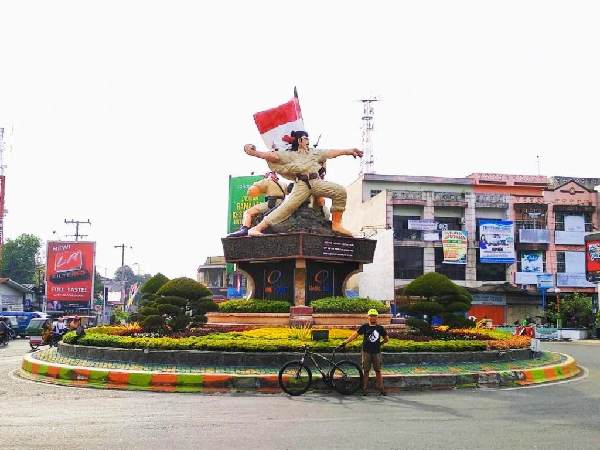

Tugu Perjuangan 1945
Tugu Perjuangan 1945 adalah ikon yang dimiliki Kota Binjai. Tugu ini menjadi simbol yang menyambut kedatangan para tamu yang datang ke sana. Anda belum sah mengunjungi Binjai apabila belum ke sini. Itulah anggapan warga Binjai karena ikoniknya tugu ini. Lokasinya yang berada di Kota Binjai membuat Anda tidak perlu khawatir mengenai fasilitasnya. Sudah tersedia destinasi kuliner hingga tempat ibadah. Selain itu, untuk ke sini tidak dikenakan biaya. Jadi, tidak ada alasan untuk tidak datang ke sini.